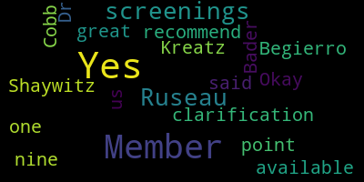
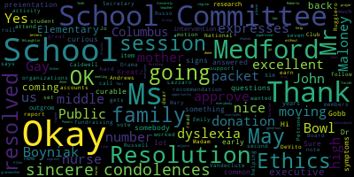
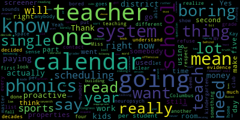

AI-generated transcript of Medford School Committee meeting May 6, 2019
English | español | português | 中国人 | kreyol ayisyen | tiếng việt | ខ្មែរ | русский | عربي | 한국인
Back to all transcripts
[Scarpelli]: come to order. The Secretary will call the roll.
[Burke]: I pledge allegiance to the flag of the United States of America, and to the republic for which it stands, one nation, under God, indivisible, with liberty and justice for all. Thank you. Approval of the minutes, April 8, 2019. Motion to approve by Mr. Russo, seconded by Ms. Kreatz. All those in favor? All those opposed? Motion carries. Approval of bills, transfer of funds, and approval of payrolls. Motion to approve by Mr. Benedetto, seconded by Ms. Kreatz. Roll call vote, please. Mr. Benedetto.
[Mustone]: Yes. Member Kreatz. Yes. Member Ruseau. Yes. Member Begierro. Yes. Member Ruseau. Yes. Member Bader. Yes.
[Burke]: Yes, 7 in the affirmative, 0 in the negative. Motion passes. Report of the secretary. Ms. Van der Kloot.
[Van der Kloot]: I'd like to make a motion to suspend the usual order of business so we can take up item number four, recognition of student achievements, humanities awards, today.
[Burke]: Very good, thank you. There's a motion on the floor for suspension of the rules to move papers out of order. Is there a second? Seconded by Ms. Mostone. All those in favor? Aye. All those opposed? Motion passes. We have item four, recognition of student achievements, Humanities Awards, Dr. Chiesa.
[Chiesa]: Good evening. Good evening. The Humanities Department is very excited tonight to celebrate three different sets of awards. These awards show their commitment to humanities through the students' ability to write, to speak publicly, and to demonstrate their content knowledge. We're going to begin tonight with the Model United Nations Awards, and I've asked the students to line up for us to expedite the process a little bit or make it go a little more smoothly. March 1st was the day where we had 14 Medford High School students and seven middle school students participate in the Invitational Innovative United Nations Conference, which is held at Northeastern University. This year, our middle school students were challenged to develop a collective approach to identify access to clean water, while our high school students tackled the difficult topic of food insecurity. Our high school students represented Nigeria, the United Kingdom, South Africa, and Iraq, and all students were exemplary in their participation and really made us proud. with their representation at Northeastern. Medford's middle school students represented Russia and Brazil, and the students also did a wonderful job, and many of them came home with awards such as Best Negotiator and Best Position Paper, showing that ability to utilize their literacy skills and their content knowledge. I want to give a special thank you to the two teachers who led these students. We have Ms. Dineyu at the high school who couldn't be with us tonight, but has worked very hard with the students. And we also have Mr. DiClemente, who is here tonight, who worked tirelessly with his students as well. So a special thank you to them as well. Mr. DiClemente. We're very, very proud of our students, and with that, I believe you have the certificates to honor them. We do. Okay.
[Burke]: For the Model UN for Medford High School, Medford Public Schools is proud to recognize Anna Claudia Alves, Exemplary Participation Innovative Model UN Conference. Anna? Adriana Barbosa? Leah Bendaniel Charles DePalma Aidan Donovan. . Brenna Forbes. . Kaylee Jefferson. Sophie Lu Megan McGilvery Haley McLean Sophia Morganti. . Samantha Pascal. . Joseph Schmidt. Nicholas Scafiddi Anna Claudia Alves is here. Okay, and from the middle school, the Medford Public Schools is proud to recognize Grant Elaine, exemplary participation, innovative model. Anna Casey. Nate Hopper Tegan Mustone Congratulations.
[SPEAKER_05]: Congratulations.
[Burke]: Ketan Pythony Thank you. Austin Price Charlotte Yamamoto The Medford Public Schools is proud to recognize Grant Alleyne, best position paper, innovative model, United Nations conference. Grant, come on back up. Charlotte, come on back up. Charlotte Yamamoto, best position paper. Anna Casey, Best Negotiator. Tegan Mustone, Best Negotiator. Ketempethani, Best Negotiator. Ms. Chiesa.
[Chiesa]: Thank you. We are once again very proud of our students. Moving on to the next award, we are extremely pleased to announce that an 8th grade Andrews Middle School student has won the Bostonian Society and Boston Duck Tour essay contest for the second time in two consecutive years. This contest is sponsored by those two groups that I mentioned with additional support from Revolutions 250. The contest serves to promote a student's appreciation for our state's vast history. The first place winner receives a $1,000 scholarship as well as a complimentary Boston Duck Tour and Old State House Tour for up to 36 people. The contest is judged blindly, so the judges had no idea that they were bestowing this award on the same talented individual twice in two years, which is absolutely amazing. We are extremely proud of this student. Please join me in congratulating the exceptional writer and historian, Tegan Mastone.
[SPEAKER_05]: Congratulations.
[Chiesa]: All right. And last but not least, we have something new for our department, our humanities department, which is the NPR student podcast challenge. This was the first year that students, that actually that NPR held this student challenge podcast. And we had a group of students from the McGlynn Middle School, sixth graders, that were recognized for their submitted work. The podcast is listened to by two different panels of judges, and it's graded on a variety of criteria, including the information and structure of the podcast, the personality and creativity of the podcast, and also the production elements of the podcast. I provided you with a link if you had time to listen to it. It is available. And this year's contest had nearly 6,000 entries. Medford students that received a shout out and an honorable mention, podcast was entitled Dr. Seuss, The Man Behind the Who. And this podcast explored Dr. Seuss' life, and his impact on the reading community. And if you listen to it, it's amazing. The intro just catches your attention right away. I loved it, and I'm very, very proud of our students. I want to give a special thank you once again to two teachers. We have Ms. Amelia Whalen and we have Ms. Ariana Lungo. It was their sixth grade group that won this competition. So if you could join me in thanking those two teachers. And of course, I would be remiss if I didn't mention Mr. Tucci, and I did not mention Mr. Downs earlier as well. So thank you for both of them for supporting all of these awards as well. So thank you. They're both here tonight. So Mayor Burke, again, I believe you have all the certificates to honor our students on their Honorable Mention and their shout-out, and you can all listen to the podcast. It is available to you, so please do. It's amazing. Thank you.
[Burke]: Thank you so much, Dr. Chiesa. The Medford Public Schools is proud to recognize Quan Buran, Honorable Mention NPR Student Podcast. Jacqueline Bramley. Victoria D'Souza. Janisha Edward. . . Mark Febby. . . Trey Flaherty. . . Lena Harrison. Sierra Isbell. Brian Luoro. Giovanna Martins. John Rivero. . Rayquan Rigaud. . Becky Wang. . And Brandon Zelch. Thank you to all the families that are out there supporting these young minds. I mean, our kids are amazing, and we're proud of them every single day. But this is just really a special night for us. So thank you for being a part of it. Thank you. Thank you.
[Chiesa]: Mayor Burke, I also, and members of the school committee, I forgot to thank Mr. DeLeva as well for his support of Model United Nations. So I don't want to leave him out. So just a special thank you to him too.
[Burke]: Thank you. Thank you. While we're under suspension, Ms. Van der Kloot, you'd like to take paper number five? Recognition of Christine Hingston, recipient of Matsell's Teacher of the Year Award. Ms. Hingston. Mr. Downs, he's here.
[Caldwell]: He was here. One second. Mr. Tixera isn't here right now, so I'm going to do the report for him. Congratulations. Christine, come on up. Congratulations to Christine Hingston on receiving Matzol's Teacher of the Year Award. She was nominated for this award by her colleagues at the Roberts, and it is well deserved. And I think they're all here tonight. Thank you, Roberts. As well as the principal, Mr. Kirk Johnson. Thank you, Kirk. The Matzahl Nomination Committee then shows the recipient based on the following criteria. Successful teaching of English learners as shown through evidence of best instructional practices and incorporation of students' linguistic and cultural backgrounds within the classroom. Long-term commitment to the education of ELs. Leadership roles at the school, district, and or state level on behalf of English language learners. mentoring and supporting of new teachers to the field through both informal and formal induction programs, strong relationships with the community, and for the K-12 parents of ELs. Ms. Hingston consistently demonstrates all of these attributes to the highest degree, and she serves as an exemplary role model to her colleagues at the Roberts and throughout the district. This honor is awarded to one teacher across the state per year, and Ms. Hingston is the second Medford teacher to receive this award. As you may remember, Teresa Castagnetti at the McGlynn Elementary School received Matzol's Teacher of the Year in 2015. The award ceremony is part of the Matzol Conference and will be held on Thursday, May 30, 2019. So this is an amazing honor.
[SPEAKER_19]: Basically, I'd like to thank the teachers at the Roberts School for supporting me. All of them are equally deserving of this award. And I can't believe that they were able to find the time to put together all this evidence. Not for themselves, but for someone else. It just shows what kind of people are at the Roberts School. And for Mr. Johnson, for all of his support as well. So just thank you.
[Burke]: Very nice. Quite an accomplishment. Okay, is there a motion on the floor to revert to the regular order of business by Ms. Van der Kloot? Is there a second by Mr. Rousseau? All in favor? All opposed? Okay, report of committees. Community participation. We do have a paper. Maureen Ronain. Hi.
[Ronain]: Good evening. Good evening. Thank you for inviting me here tonight to discuss our experiences with dyslexia. I also wanted to thank Decoding Dyslexia for helping me on parts of the speech. My name is Maureen Ronain, and I have a second grader in the district. He is the one in five that has been diagnosed with dyslexia. He is a happy and bright child that does not have the natural ability to read, write, or spell. Children with dyslexia require explicit, systematic, repetitive, and cumulative instruction on how to read. He has been receiving Wilson, for reading since kindergarten on his IEP. So for two and a half years, he met with a special education teacher for up to nine sessions a week for reading support. Each session was 45 minutes long, and to fit all of this instruction in, he sacrificed social studies and science classes, his favorite subjects. At his three-year reevaluation, the district saw incredible progress. For reading fake words, he scored in the 73rd percentile. His written language was scored in the 86th percentile. No further decoding lessons were proposed. He was described as being bored in these lessons, as it was too easy for him. Unfortunately, we were not seeing this improvement at home. To allow us additional time to obtain independent testing, we invoked a stay put. This meant his level of services could not be eliminated at that time. Dr. Cindy Krug from Tufts University administered several standardized reading assessments. She found that he was two years behind his age meets for reading. We had his annual speech and language evaluation at Boston Children's Hospital. They administered the CTOP. This is a comprehensive test of phonological processing. This measures the very basic skills needed for reading. On one subtest, he scored in the one percentile. The scores on the other subtests weren't much better. His written language was reassessed. It was determined to be difficult and laborious. Some of it could not be scored because he could not complete the tasks. On one final measure, he again was tested on his ability to code pseudowords. This determines if a child can actually read or if he has memorized words. Out of 60 fake words, he scored a zero. There is something very wrong here. I have spoken with over 22 families in the district. They all have a child with dyslexia. They have had similar experiences. We are told to wait and see. He'll catch up on his own. Trust us. And my favorite, have you tried reading to him? I started reaching out to special education lawyers with success helping students with dyslexia. One recommended that individual families file a complaint with the Federal Office of Civil Rights to compel the district to act. She believes that there is a systematic denial of fate for students with dyslexia. Another attorney advised me that the Wilson Foundation program is a general education program and does not meet the federal criteria for reading instruction. That was the program that he received for two and a half years. No one noticed that my son could not read, write, or spell. I am asking you to make dyslexia a priority in professional development. Education and special education teachers need to be able to recognize this learning disability and to be able to teach all students to read in an explicit, systematic, cumulative, and robust manner. My final thought I would like to express is this. If schools fought as hard for those with dyslexia as they do against it, we would have a completely different and substantially less impacted special education system.
[Burke]: Thank you. Thank you very much.
[Ruggiero]: Mr. Ruggiero? Mayor Burke, the story that you just shared with us, can you come back to the podium please? I'm sorry. Your story that you shared with us is not, I mean I've talked to other parents that have had similar experiences as well. I'd like to recommend that we, oh I'm sorry, excuse me. The experience that you shared with us is a story I've heard before, especially with dyslexic children. And to this end, in regards to what you've brought up, I would like to, at least maybe not tonight, if we can't get it on the agenda, but maybe we can do it another night where we can ask for a report for dyslexia, like a dyslexia audit from the school system. Would something like that be possible, Superintendent?
[Edouard-Vincent]: So this evening we have a presentation for you from Dr. Nadine Gabb, who's going to talk about what research says about dyslexia. And in terms of discussing students on the floor of the school committee, normally that is not done. That is not recommended practice. I appreciate what has been said, and I know that there's work that we can all do. But in terms of having a report on a general number of students that may or may not have a particular disability, I would have to defer to our Director of Pupil Services for the total number of students with a particular disability.
[Ruggiero]: My concern would be just making sure that we're doing the best for curriculum. I appreciate the presentation that we're going to have tonight, but it would be useful for me to understand where we are as a community versus just research.
[Edouard-Vincent]: So once you see the presentations today and what the district is doing, I think you're going to receive a lot of new information today and know the direction that the district is moving in.
[Burke]: Mr. Benedetto.
[DiBenedetto]: Thank you. I also, I just want to thank the parent for coming forward and putting her face to what we're learning about next. And her family's story, telling it publicly is not always easy. And it helps make it relevant as we learn more and what our next steps should be. It puts a picture together for us that what we're working for, and I appreciate you coming forward and sharing that. It's very important for us to see that. Thank you. Ms. Van der Kloot, did you want to?
[Van der Kloot]: I would also like to thank the parent. I want to tell you that I wish that many years ago when my youngest, I didn't realize, we didn't know until much later that she was dyslexic, and it's actually impacted her whole life. With that being said, I think it would make sense for us to again suspend the order of business and go directly to the reports on dyslexia since we've now gotten into the topic.
[Burke]: There's a motion on the floor to take papers 2 and 3 out of order, seconded by Mr. Benedetto. All those in favor? Aye. All those opposed? Those papers will be before us now. I also want to state that one of my children had it and it was a brand new teacher to the system that said, your child has a glitch. There's a glitch. There's something wrong. You need to check it out. And it's one of those bright stars, one of those bright teachers that just sees something different, and it changes the whole course of the child's life. So thank you to the teachers that are still in the audience here. Item two, report on the science of dyslexia. Dr. Nadine Gabb. Gabb, I'm sorry. Good evening.
[SPEAKER_02]: Good evening. Thank you for having me. Thank you so much.
[Burke]: While that's being set up, I would like to read a biography on Dr. Gabb. Dr. Gabb is an associate professor of pediatrics at Boston Children's Hospital and the Harvard Medical School. She received her PhD in psychology from the University of Zurich in Switzerland and did post-doctoral training at Stanford University and MIT. Her research with the laboratories of cognitive neuroscience focuses on the development of typical and atypical language and literary skills, as well as pre-markers of learning disabilities. More specifically, she works on the identification of possible pre-markers of reading disabilities, including developmental dyslexia. In the pre-reading and infant brain, the identification of the underlying neural mechanism of comorbidity of developmental dyslexia and attention deficit hyperactivity disorder. and the development of tablet-based technology for early screening approaches for learning disabilities. Her lab works closely with over 50 private and public schools nationwide, and she's a frequent speaker in the community. She's the 2019 recipient of the LDA Award, Learning Disabilities Association of America Award, and in 2018, Dr. Gabb was presented with the Alan C. Crocker Award for her advocacy on behalf of children with dyslexia and reading disabilities and efforts around the recent passage of the Massachusetts Screening Legislation. She has also been recognized by the International Dyslexia Association in receipt of the Alice H. Garside Award for Outstanding Leadership in Advancing the Science and Advocacy of Dyslexia. She is further a recipient of the T. Barry Brazelton Award for Innovation at Boston's Children's Hospital. She's a scientific advisory board member of the Dyslexia Foundation and Landmark School and a founder of the New England Research on Dyslexia Society. Welcome, Dr. Gobb.
[SPEAKER_02]: Okay, yeah, so I would like to cover the next 15 to 20 minutes some of the basic research that has come out of many different research laboratories around the world when it comes to dyslexia and reading disabilities related to the brain, but also to advocacy and policy when we talk about early screening and identification of dyslexia. I wanted to start with a rough timeline of typical reading development so that we all in the room have the same terminologies. I know there's a lot of educators in the room. So usually when people ask, when does reading development start, people say, well, maybe in preschool, maybe the first day of kindergarten. Actually, reading development starts in utero because the fundamental first milestone is sound processing as well as visual processing right after birth. We then move on to phonological or phonemic awareness and letter recognition, which are very essential milestones in preschool, early kindergarten. Then later on, children are mapping the sounds of language onto the written counterparts, and the ultimate goal of learning to read is reading fluently and comprehending what you read. So as you can see, there's a lot of different things that can go wrong in this timeline, all the way from utero to an adult reader. What's really important here is the timeline in the bottom, which is there is a shift from learning to read to reading to learn. And this usually is very similar in each district and occurs around the end of second, beginning of third grade. where teachers stop actively teaching how to read and then assume that children are reading and more using reading as a tool in order to gain content, access content knowledge. So if a child is not reading by then when the shift happens, this can then have tremendous implications on the self-esteem, on social life, on academic life. Academic life because it then affects work problems and math. It will affect social studies because you can't access the homework. It will affect social life during recess because everyone talks about how they read Harry Potter last night and you can't even read simple sentences. What is really important is, and this is a very famous picture from Hollis Gabor, is most people only focus on this part of learning to read, the phonological awareness, the decoding, the sight word recognition, which is supposed to become increasingly more automatic. But then the language piece is also really important, and we'll get back to this when we talk about screening, where we want to make sure that we are not just screening for these, you know, more narrow views of learning to read, but also allowing for the screening of language skills, such as vocabulary, et cetera, which are also really important components, especially for reading fluency and reading comprehension. The development of basic reading skills is one of the primary goals of elementary education. But as you probably know, 63% of fourth graders are reading below grade level and 80% of those are from low socioeconomic status backgrounds. And this is from the most recent national report card. This can have tremendous implications. You can just imagine what it feels like if you were the king on the playground, climbing the highest, running the fastest, and then suddenly you start kindergarten and everyone else around you can figure this thing out, how to map the sounds to language, but you can't. This has tremendous implication for self-esteem really early on. We see this as early as within the first couple of weeks of kindergarten. Feelings of shame, inadequacy, helplessness. We see very high rates of depression, anxiety in children as well as behavioral problems because before you start reading aloud in classroom in front of all the other children, you probably want to act up and end in the principal's office so you don't have to do this really difficult task for you. If you look at adolescents and adult outcomes, we know that children with dyslexia and other learning disabilities are less likely to complete high school or pursue higher education and are more likely to enter the juvenile justice system if this is not addressed. There's even estimates now that up to a third of all inmates in the United States of America currently have a language-based learning disability. We also know that about 90% of working age adults with learning disabilities have annual incomes less than $50,000, and often even lower than this. And it has tremendous implication on society as a whole. So if you look at the nation's report card, what is really striking here, and this is where the 63% come from, this is from 2017. There's another one due this year, but I don't expect the numbers to change. What's really striking here is that the average of all children in the United States is below the proficient one. And you can see the number has not changed at all from 1992 all the way to 2017. So something more fundamental has to happen than some of the policies that were put in place like no child left behind, et cetera. If you are a poor reader in 1st grade, 70% of these poor readers remain poor readers in 8th grade. So we can see this as early as kindergarten. We don't have to wait until we get to this. What's really, really striking is that students at the 90th percentile, so only 10% of kids are reading better, read as many words in three days as a child at the 10th percentile reads in an entire year outside of school. You can see what a tremendous impact poor reading has also on how they perceive the world, how much additional content knowledge, just information about the world these kids are not getting because they're not reading the magazines that the doctors offers, the ads on the bus. We are not talking about like high level literature here. We are talking about the number of vocabulary that a child adds through reading. So we know for instance that an average kindergartner starts kindergarten with about 10,000 words of vocabulary. So they know the meaning of about 10,000 words. By fifth grade, this goes up to 60,000. And we know that the difference of these 50,000 words are primarily coming from reading. They're not coming anymore from your parents. The bad words may still come from your siblings. But it's primarily through the access of reading material that you build this additional vocabulary. So what are factors contributing to atypical reading development, including dyslexia? So what we know is that reading disability is an umbrella, that dyslexia is under the umbrella, and also reading difficulty is a result of other circumstances. What's really important here is that all the interventions that we currently know that work for dyslexia also work for other poor readers. So there's no reason to just give certain interventions to kids with dyslexia, but not kids who are reading at the low level due to maybe low vocabulary or low language skills or a language deficit. So what is dyslexia? It affects about 10-12% of children. This is a very accurate number. It has been shown in many different school districts that have looked at this. So I don't know how many kids you have in the district, but you can make the numbers, you know, 10% of these kids should have a diagnosis of specific learning disability or dyslexia. It is a specific learning disability with a neurobiological origin, I'll get to this. It's characterized by difficulties on the word level. So these are kids who have problems with decoding single words. But this does not come from poor vision or hearing, lack of motivation, or lack of educational opportunities. What we do know is if you have an older sibling with dyslexia or you have a parent with dyslexia, you have a 50% chance to develop dyslexia yourself. This is very high. This is much higher than a lot of the other developmental disabilities. So one in two children with an older sibling or a parent will develop dyslexia themselves. What we do know is there are structural and functional brain alterations in dyslexia. So there are certain areas in the brain that are really involved in learning to read and fluent reading with high comprehension. And many, many different research studies have shown over the last 15 years that there is less neurons in these brain regions in children and adults with dyslexia, that the connections, the highways that connect the two regions or three regions that are involved in learning to read or fluent reading are less developed, show less volume, et cetera, et cetera. So this has been shown many times before. What's also really striking is this discrepancy here. The dyslexia paradox is the discrepancy between the current diagnosis and start of intervention when this happens and the window for the most effective intervention. I'll quickly walk you through this. So the current diagnosis start of intensive intervention window usually only happens after a child significantly fails over a long period of time. We call it the way to fail approach. This is the approach we currently do in most districts. And you hear things like, oh, you know, he's a summer baby. He'll catch up. Oh, she's just late developing, et cetera, et cetera, et cetera. These children, usually if they're lucky, and it happens early, have to wait till the end of second, beginning of third grade. So this is kindergarten, first grade, second grade, often third grade. for three to four years before someone says, okay, he or she has failed long enough, now we're going to start looking more specifically into this. What's really sad is that research has shown, and not just one research study, 20, 25, that the window for the most effective intervention is in kindergarten and first grade. And there's two reasons for this, at least. One is the brain is a lot more plastic the younger it is for language. And one example would be we all move to a foreign country tomorrow. Let's say we all move to Greece. And I assume no one speaks Greek here for today. And I can guarantee you we would have a wonderful time in Greece, but none of you would ever sound like a native speaker, ever. You would always have an accent, you would always make mistakes with syntax, as well as vocabulary. I've been in this country for 20 years, I still have a strong accent. If we move a four-year-old, I can guarantee you that in one, two years, you will not be able to distinguish them from a native speaker. So this is just one example of how the brain is so much more fluent for language. So we know there are behavioral predictors of dyslexia, and many studies have shown that they are accurately predicting who will go on to develop dyslexia and who will not. We also know that these brain alterations that I showed you earlier predate the onset of kindergarten. This is work from my lab showing that preschoolers, the summer before kindergarten, already show these brain characteristics. And that suggests that they're stepping into their first day of kindergarten with a less optimal brain to learn to read. So there's no reason to wait for second grade or third grade to give them the help they need. If you look at the left side here, you can see typical children at the start of kindergarten, at risk children, and then three months later. You can see they're starting to build a reading network here. This brain here also shows changes, but outside of what we would expect of the network that's important for reading. We also see that the highways that connect different regions in the brain are different in children who later on develop dyslexia versus not. And we see this very, very early. We do currently a study in infants. So these are infants with an older sibling of dyslexia or a parent of dyslexia. And we could show these brain characteristics already in infancy. So you can then look at infants and pre-readers, beginning readers and fluent readers, there's the same brain characteristics. So we see this as early as infancy. So there's no reason to wait and let them fail and see whether they catch up, etc. If it is dyslexia, if they have problems learning to read, then it will only get worse. So how can we solve this? So solving the dyslexia paradox really involves a paradigm shift. And I think the states, as well as the whole nation right now, is preparing and looking at this. There is now 26 states in the United States that have dyslexia laws, especially dyslexia laws related to screening. We were very involved in the passing of the law that was just signed by Governor Baker on October 16th, and it requires mandatory screening for dyslexia for all kindergartners in Massachusetts. So the idea here is that you do comprehensive early risk screening and evidence-based response to screening within general education. So the idea here is not to put all these children in special ed. The idea here is more like the medical model that we use to detect, for instance, heart disease, and I gave you the example. So we can screen for high cholesterol, and if you have high cholesterol, you do not get a diagnosis of heart disease. You know that you are at risk to develop heart disease. So what then your physician does with you, they maybe put you on medication, maybe change your diet, maybe change your exercise level, with the goal that you will never develop heart disease. Or if you develop it, it will be less severe. This is the same idea here. We want to screen in kindergarten and identify the children at risk who have a higher risk to develop dyslexia or reading impairment. We will then, within general education, with really well-trained, empowered teachers, address this so that the rates, that we have lower rates of dyslexia, reading disability at the end of second or third grade. Or if someone gets a diagnosis, it's less severe because they already have all these years of really targeted remediation intervention practices in place. This has been done, there's a study from Florida showing that it works really, really well and that these kids have much better outcomes, especially if you screen for all reading disabilities, not just specifically dyslexia. We have a recommended screening battery. I'm happy to share this with educators, administrators. We also, from the International Dyslexia Association, really work closely with districts to see what kind of resources they have. Do they already have some of the assessments that would allow for screening? to make sure that they're screening early, to make sure that they're asking family members, is there anyone in your family who was struggling learning to read growing up? Because remember, the 50% of kids who have an older sibling who have a parent, that will develop dyslexia. It's important to include ESL learners. It's important to include dialect inclusion. And it's evenly important to put evidence-based response to screening. So I work with a lot of districts and they say, oh, Dr. Agar, can you help us to be compliant with the law by the fall? And I said, okay, let's sit and talk about this. And I said, well, if you put the screening in place, you need to put the evidence-based response to screening in there. Otherwise, you just screen for cholesterol, but you don't do anything in response to it. So it has to be a package. It has to be a package that does both. So this is just some work from decoding dyslexia. You're probably familiar with the Act Relative to Dyslexia that was passed in October 2018. Early screening to identify students at risk. So it's a combination of the MEAP Child Find Federal Guidelines and the MH Chapter 71B Section 3. So we want to identify the problem and really move from the current model with the high incidence where it's gradually identified and only a fraction of kids on IEPs read proficiently. screen-to-intervene model, where you screen early, put interventions in place, and it takes a lot less if you do this early, because you don't have this big gap between kids who have problems with reading and kids who don't. And this is just an overview of the different reading laws. So we have the federal required action and then the new state required action that was just passed. And to my knowledge, the Department of Elementary and Secondary Education are currently working on guidelines for the districts, but I strongly encourage everyone to think about this before the guidelines come out, because once the guidelines come out, it requires a lot of rethinking and planning. Okay, so just 10 myths about dyslexia screening before I finish. First one, signs of dyslexia can only be seen after two to three years of reading instruction. That was the case 25 years ago. Now the research has caught up. We know exactly how to identify these children. We know exactly what they need. We know exactly that they need this early in order to catch up. Screening is expensive and has low sensitivity and low specificity. There are ways now, screening tools that are a lot less expensive, like we are developing one on a tablet right now that can be administered in a large group, for instance. There's other really great things out there. Screening tests will only add more testing to the kindergarten age. I do a lot of professional development in school districts, and all the teachers tell me this will be really helpful to know the first day of kindergarten, who do I actually have in my classroom, and who is lacking which early literacy milestones to then plan ahead and really try to address this early before it becomes a problem in first, second, and third grade. We don't have to go through all of those, but the screening will give children a diagnosis at age 4. I hope I convinced you that this is not what we are trying to do. This is not what the law is about. The law is about identifying children at risk so we can help them early when the brain is most plastic. in response to language so that they never develop the devastating feelings of shame and helplessness, et cetera. And I thank you and answer any question if you have any.
[Caldwell]: Thank you.
[Burke]: Thank you. Mr. Ruggiero.
[Ruggiero]: Thank you. Thank you, Mayor Burke. Thank you, doctor, for this very informative presentation. There are a number of things that you brought up that really interested me. One of the things I guess that concerns me, so we can expect, according to your research, we can expect 10% of the students in our school system at all grade levels are suffering from dyslexia. Of that 10%, how many, I wasn't sure if I caught it in your presentation, if I missed it, I apologize, but what percentage of students that are in that 10% category are actually aware of their dyslexia?
[SPEAKER_02]: I think they should all be aware because they would all be struggling with reading.
[Ruggiero]: Would they be medically diagnosed with... No.
[SPEAKER_02]: I'm just saying if you would probably have a neuropsych evaluation for every student in your district, you would have a diagnosis in 10% of your students.
[Ruggiero]: Yeah, let me clarify my question. So of the 10% that have dyslexia, How many have a medical, what percentage of that 10% have a medical diagnosis of dyslexia?
[SPEAKER_02]: I'm not sure what you mean. So they all would have a medical diagnosis of dyslexia. There's other kids who are struggling with reading who are on top of this. So that's the 63% that are not reading on grade level. So you have 43% in the United States that are not reading on grade level for whatever reason, and 10% or 53% versus 10% have dyslexia. And one thing also that
[Ruggiero]: that I would like your advice on. So for the students that are in the sixth grade, the seventh grade, they've moved beyond their optimal time for treatment, and they're sort of, they went through the wait to fail model, I guess, and they're in the fifth grade, sixth grade. What steps should we take to address those students?
[SPEAKER_02]: Yeah, so just to clarify, just because they're outside of the window of the most optimal or most effective window doesn't mean that it's not effective anymore to do remediation intervention with these children. So you should really make sure that these kids get proper intervention remediation right away. There are some evidence-based programs that have been shown to be really helpful for children with dyslexia. And so ideally they would all get this. Either in the language-based learning disability classroom or through special ed or whatever model you want to put in place.
[Ruggiero]: You mentioned the tablet program that you're developing right now on an iPad. What sort of training is necessary for teachers to quickly and adequately spot dyslexia early on so they can get the best treatment?
[SPEAKER_02]: Yeah, that's the great thing about that tablet base. And there are a couple others. So it requires absolutely no training whatsoever. The tablet base is self-administered. So you just give it to the child with headphones and you can walk away. And the children are playing a game. And through the game, you're screening for the early literacy milestones as well as dyslexia. So it does not require any training for the teachers, but also no training on interpreting the result because the screener would just show you this kid is at risk for the following components of the components they should know.
[Ruggiero]: How long does this little iPad quiz take or game?
[SPEAKER_02]: 15 to 20 minutes.
[SPEAKER_15]: 15 to 20 minutes? Yeah.
[SPEAKER_02]: So it's not currently out there, so you cannot get it. We're doing a nationwide validation study right now with many different school districts that will be out in 2020. But I'm not here to promote this. I just wanted to make sure. There's actually 80 screeners out there, paper, pencil. Out of the 80, there's probably eight or nine that I could highly recommend. And not all of them require a lot of training.
[Ruggiero]: So it would be something that we could maybe Xerox off and just let the kids play with for 20 minutes?
[SPEAKER_02]: So it would be an assessment. But that could be done. So there's lots of school districts already in Massachusetts. We do this. during the meeting with the kindergarten teacher in the first week of school or even in the summer before school. There's lots of different models and I'm doing a lot of consultations for school districts and some do it in April before kindergarten once they know who's coming and it gives them a whole summer to plan ahead how to group them and what to do. So there's lots of different districts. So there's absolutely no excuse to say we don't have the money to find a screener or we don't have the trained personnel. We are beyond that.
[Ruggiero]: Yes. Thank you.
[Van der Kloot]: Thank you. Ms. Van der Kloot. Yes. I just was curious whether there is any indication that for preschoolers, I mean, is this something that can be seen even earlier for a parent? Are there particular sort of warning signs?
[SPEAKER_02]: Yes. So as I said, the screeners are usually for preschool and early kindergarten. So there are some districts in Massachusetts but also nationwide that screen in preschool. So they screen usually in the spring of preschool or they can screen in the fall of preschool and then have the whole preschool year to address this.
[Van der Kloot]: The other question is the parent who came before us noted that her student had in fact been given some remediation. How do we figure out what's the best way to help a student? We'll go with the model that the student has been screened early. What is the approach that we're going to best meet the needs of a student who falls into that category?
[SPEAKER_02]: Yeah, so the screening is usually done for some key components. So if the student, let's say, in kindergarten presents with low phonological awareness skills, there are certain programs that you can then put in place, even in general ed, that would boost this phonological awareness deficit. kids that come with really low language skills. Usually kids from low socioeconomic status families come with low vocabulary or oral listening comprehension. So these kids often then have problems with reading fluently or comprehending what they read because they don't even understand how complex or complex sentence is even constructed. And so they would need a little bit of a different approach. So it's a bit like you being screened for high cholesterol. Hopefully you think your cardiologist would tell you what to do next and not just give every student or every patient the same pill, right? So it's the same idea here. So you're screened and then you have maybe three, four different approaches But it's nothing that you cannot implement within general education, and some districts have already done this.
[Van der Kloot]: Who do you think is doing a particularly good job, if we think about districts you've worked with?
[SPEAKER_02]: I'm happy to look into this and go back. There's been some really, I think, really great progress in Andover, for instance, that have, like, really looked at how they teach reading, how they screen for reading, how they respond. They did a lot of professional development for their kindergarten teachers and first grade teachers. There's other districts that are really thinking proactively and thinking, how can we address this? more with the medical model, where we look at prevention. So we're moving from a deficit-driven model to a preventive model, which is better for everyone, especially for the mental health of the students and the academic outcomes of these students.
[Van der Kloot]: Thank you.
[DiBenedetto]: Mr. Benedetto? Thank you, and thank you for your presentation. It sounds like you're working with a lot of different districts, and we want to know how we can get you to work with the Medford district, what would be involved in that, what way you see us beginning, how you could walk us through some of the process, maybe come up with some ideas with our superintendent. I don't know if there's any grants we can apply for, because this is a new initiative coming out from the state, and how we get expertise like yourself in helping our children in our classrooms.
[SPEAKER_02]: Yeah, yeah. I'm happy to meet with you and give you some of the options. It's not just me. There's also other wonderful players in the field, and you may want to talk to them as well. I work closely with them. Like the Landmark School, for instance, has a really good program where they actually come into the district and look at all grade levels and see how dyslexia is addressed from the kindergarten age all the way to high school. And then they they tell you the different options, you know, what they think would be ideal versus, you know, more the middle ground versus what they would recommend minimally. There are some other agencies, you know, and stakeholders like this. And I'm happy to give you a list so you can make an informed decision what you would like to do.
[Edouard-Vincent]: I also wanted to just comment that Dr. Garb did did come and do a robust professional development session for our administrators. So you're seeing an abbreviated version of a much shorter condensed version. So we are definitely taking dyslexia very seriously and working on developing ourselves and being prepared to address the mandate that has come down from the state.
[DiBenedetto]: I had a question. Is it a funded mandate or an unfunded mandate? Is there grants available?
[Edouard-Vincent]: It's an unfunded mandate.
[DiBenedetto]: Okay. You know, it's great to have mandates, but we as a committee or a school district have to find ways to fund these changes. And if there's fundamental changes in how we need to teach reading and literacy to our early readers or early beginning people, I think that education is like a foundation of a house. If you catch it early and you have a strong foundation, you have a beautiful, strong house for many, many years. And I always would love to do that, and I think this is worth investigating further for our district, and I would like to make a motion at this time through the mayor, to the superintendent, please investigate and give us some costs involved in bringing either a landmark program, Dr. Gobb, or something similar before us with this budget so that way we can move forward immediately and less families and children have to come before us pleading for help for their kids. I think this is tremendous, not only for kids with reading deficiencies, but I think how we look at reading fundamentally and not early learners, so I'd like to make that motion at this time.
[Burke]: There's a motion on the floor, seconded by Ms. Anne DeClune and Mr. Sciarro. All those in favor? Aye. All those opposed? Motion passes. Ms. Kreatz is in the queue next. Yes.
[Kreatz]: Hi. Ms. Kreatz. Thank you, Dr. Gobb. Sure. The presentation was excellent. It answered a lot of questions that I had about what the common signs are and symptoms. I was curious, like, is dyslexia something that is curable? Like, could somebody with early intervention outgrow dyslexia in their middle school and high school years?
[SPEAKER_19]: Yeah.
[SPEAKER_02]: So there's actually evidence that if you catch it early and you do the right things, that about 60 to 90% of these kids develop typical reading skills.
[Kreatz]: Excellent. Is that new research?
[SPEAKER_02]: No, I can definitely send you the references. It's probably the last seven, eight years. So it was a meta-analysis over six studies showing the same effects.
[Patterson]: Great, thank you. I'll second. Ms. Kurtz? Yes.
[Ruggiero]: Mr. Ruggiero. Oh, just a follow-up question on the item. If we could just sort of work towards having an audit of where we are with the various dyslexia. Our next presentation is going to address many of these questions.
[Burke]: Thank you so much for your presentation. I hope you'll stay while the next speakers address the system. Thank you. Next up, report on Medford's response to dyslexia screening law. Dr. Nicole Chiesa, Katie Champoli, and Susanna Campbell.
[Edouard-Vincent]: I just wanted to preface that Dr. Chiesa, our Director of Humanities, is working very closely with our special education administrators, Katie Trampoli and Susanna Campbell, and really looking at what the district's next steps are going to be based on the guidance that we do have currently from the state. So I look forward to the presentation. Dr. Chiesa.
[Chiesa]: Good evening. Good evening. We have been asked here tonight to speak specifically on Medford's response to the Dyslexia Screening Law. We're going to organize the presentation in three different steps. The first is an outline of exactly what the law says, so we can have a real clarity around that. The second is the current steps that Medford has taken thus far in response to the law. And the third is the future steps that Medford, with the school committee's support, hopes to move forward with. To begin with the law, on October 19, 2018, Chapter 272 of the Acts of 2018 was approved by Massachusetts legislation. And the law specifically reads, and I really have to take a hard look at the law, even as a lawyer, to really understand it. And that is that the law requires that DESE, in consultation with the Department of Early Education and Care, must issue guidelines to assist districts in developing screening procedures or protocols for students that demonstrate one or more potential indicators of a neurological learning disability, including but not limited to dyslexia. So in response to this law, the school districts in Massachusetts are currently awaiting DESE's provision of specific guidelines for the screeners and protocols. So it's just important for us to understand that we don't have exactly what DESE wants us to do. Doesn't mean we're not moving forward, because we are, but I just want everybody to understand that. We are awaiting DESE's response. Through discussions with DESE, the district has learned that DESE, the Department of Education, is still seeking a vendor to develop these guidelines. The vendor is going to organize, convene, and facilitate different groups, and then they will give a draft on the specific guidelines. So we really know exactly the expectations. We don't want to miss anything. The expected completion date for the guidelines has been pushed now to June 30, 2020, with a projected implementation for school year 2020 to 2021. Now, that doesn't mean that we are not moving forward, because we are. So in anticipation of these guidelines, Medford Public Schools is implementing numerous proactive steps. Dr. Vincent mentioned in February the district administrators attended Dr. Gabb's two-hour presentation on dyslexia and the new legislation. We've had multiple staff members participate in graduate-level courses in dyslexia, dyscalculia, and dysgraphia. We've had all of the special education teachers at the elementary level attend a web-based training entitled Dyslexia for Educators, an Overview. and the high school did that as well, excuse me, so special education teachers at the elementary, middle, and high school level. In addition, the district has most recently established a Dyslexia Screening Law Task Force. The task force is going to research and respond to the anticipated guidelines, and the discussions are including screeners, current and future interventions, including the wind block at the K-2 level, the potential implementation of a new phonics program at the K-3 level, updates from DESE regarding the legislation, and response from educators in other states with similar legislation. The purpose of the task force is to expand next year its membership to include representation from additional administration as well as reading specialists, special education, and general education teachers. Although there is no legal requirement Currently, to presently utilize a screener, the district has decided to be proactive and implement a universal screener for next school year. We've looked at what some other states have done, and we see that we have something called the Shaywitz Dyslexia Screen that is an efficient, reliable, and user-friendly universal screening measure for students who may be at risk for dyslexia. The screener emphasizes phonological, linguistic, and academic performance. and it will place our students into two groups, those at risk for dyslexia and those not at risk for dyslexia. To support the implementation of this screener for next school year, K-2 teachers will participate in a live training webinar in May. The screener is going to be administered in the fall for students in grades K, excuse me, for students in grades one and two, and in the winter for kindergarten students. The results of this screener will be used to first identify students at risk, but then to intervene with what we currently have, as well as additional evidence-based resources, and to then monitor progress. Is there anything else? That was just a basic overview for you.
[Burke]: Can I just ask a question? I know when the doctor had up the chart, she said most focus on the bottom three and not the top six or seven. I think the screen that you had up earlier, and it seems like what this second to the last paragraph is looking at is the bottom three.
[Campbell]: Phonological and linguistic.
[Burke]: Yes. Are we asking about hereditary?
[Chiesa]: And any of our questionnaires? The specific Shaywitz Dyslexia screen does not, I don't know if they ask for that, Susanna, maybe at all times.
[Campbell]: It's difficult for us to say because I have not actually seen the screener with it. We are in the process of purchasing it, so until you purchase it, you don't get to see all the questions, but it's essentially a questionnaire. I'm sure you've seen it.
[SPEAKER_02]: I'd like to comment on that. Yeah, yeah. So what the Shaywitz screener does is it does not directly assess the student. It just asks the teacher a couple of questions. So it does not directly test or assess the child, which has often been critiqued. But it does have a familiar question in there.
[Ruseau]: Mr. Russo. Thank you. Thank you for this work. And I know it's a lot of work. I do want to say that the word proactive is becoming a bit offensive. As a parent of a seventh grader who can barely read, it's not proactive. We're decades behind. And so we're proactive because we have the law coming down. We are not proactive to all these kids that can't read in our district. While there's lots of new evidence, the evidence has, for the most part, been very clear for decades. And we refuse to teach phonics because it's boring and teachers don't want to be bored. The reading wars were lost, and the teachers just decided to rebrand it, rather than teaching phonics. That's the truth. So my question is, after doing all this, these teachers are going to have to teach phonics. What are we going to do with the teachers that refuse? Because there are going to be teachers refusing to teach it, because it's boring. I know it's boring.
[Chiesa]: It's important, though. It's critical.
[Ruseau]: But it's not up to the teachers to decide that it's boring, and they're going to do it for two days a year and call that phonics. So what are we going to do as a district when the teachers won't do it? Because it's been, what, was it 1993 or 4 when this was decided by Congress because the teachers just couldn't work it out?
[Edouard-Vincent]: So this is going to be a district-wide initiative. So it's not like you're going to have an option to not do it. So I think you're implying that people have an option to say that they're not going to screen or not going to implement the curriculum. It's something that we're going to do district-wide. Although DESE is still waiting to give guidance, right now we don't have something formally in place, so trying to at least put a measure in place as a district so that we can at least get preliminary information while we are waiting to get our official marching orders from DESE. But it's not going to be optional. So this is something that will be happening district wide. And so it's it's not something I don't anticipate teachers saying I am not going to be screening or passing out or completing the screener.
[Ruseau]: It's not going to be an option. I'm not talking about the screener.
[SPEAKER_05]: OK.
[Ruseau]: I mean, I didn't need the screeners to know that my four-year-old wasn't going to be able to read when he got to kindergarten. I didn't need that. He could remember the book. That's why he could read. But he could never actually read. And his kindergarten teacher sort of made the inappropriate, not following the rules, said, you should get a neuropsych. We don't typically do it until first or second grade. But whispered in my ear that it should be done. I'm glad she did, but the school's first time deciding he should get a neuropsych was second grade, I think, second or third. My point is just figuring out which kids need services is one thing, but if the staff is incapable or disinterested or not up to par to do it, Because what I've heard about phonics is it is so damn boring. My son complains when he comes home because he has phonics and he loves his phonics teacher. But he's like, oh, it's so boring. And I wouldn't want to teach it day in and day out to a classroom full of kids who are bored. I get it. But it needs to not be a choice.
[Chiesa]: I agree. And fidelity to any program we choose can sometimes be an obstacle, even if you just look at any elementary program. One way that we check for fidelity to any program, including to implement something for phonics, is a collective effort. It's with doing, you know, walkthroughs, having dedicated time, take a block schedule, for example, at the elementary level, knowing that during these 30 minutes this will be taught, check-ins, and feedback with the teachers to see what's working and what's not, because they often, can really, we can get over some obstacles that may be the deterrent. So a united front, when we choose any program, which I have done in the past, is huge. Because you're right, if you, sometimes you just put something out there, and it's not, people aren't trained properly, and there isn't that motivation to do it, and then there isn't that check-in, that can happen. So I can assure you that should we move forward with the intervention resources, that we will be a collective front as a district with that, including part of the evaluation process is the curriculum, and that would be a piece as well. So I don't know if that answers all of your questions, but I certainly hear what you're saying, and what I've heard from a lot of teachers through a lot of the work I've been doing at the committees at the elementary level is the desire for that as well. So, I'm not sure that resistance will be there as much. It might, but we will certainly, it's not the first time we've overcome that. And our staff really does, you know, want what's best for the students. So, I believe collectively it will be done. Did that answer your question?
[Ruseau]: Yeah, and I just want to say, I also respect that my understanding is virtually no teaching schools actually teach this to the teachers anymore. So, like, for the teachers, like, they need to be really taught how to do it from scratch, it sounds like, for a lot of teachers. So, I mean, I don't mean to suggest that it's, like, just some simple thing they don't want to do and let those kids fail, but... They need to be supported as well.
[Chiesa]: They need a lot of support. Absolutely, 100%.
[Edouard-Vincent]: And receive quality professional development. Yes.
[Ruseau]: Ongoing, really.
[DiBenedetto]: Yep. Mr. Benedetto. Thank you. I have a few questions. First of all, I'm wondering if the task force next steps, if the task force can contact the Andover Public School, look at what they're currently doing based on the information we received tonight, and see what screenings they're using, how much they're paying for it, like all of those connections. I would appreciate that. And maybe even reach out to the landmark program and see what they can have to offer us.
[Chiesa]: can definitely reach out. That's where my children are in school, so I'll have no problem doing that. OK.
[DiBenedetto]: And I want to know why the kindergartners aren't being tested until later in the school year, when we know that even testing them before they come would be the best idea. So I would like to do that as their kindergarten screenings happen, because we do screen them.
[Chiesa]: Let's do it then. I just have one point, Ms. Campbell may want to speak more, may be able to speak more eloquently than me, than I about this, but my understanding from the Shaywitz is there's a little bit more of that personal time with the student before you can assess, but, and I think that was what, why the delay is in winter, but I will let her explain that.
[DiBenedetto]: Before you answer that, why are we using an assessment that doesn't assess the student's needs, and it just answers questions to the teachers? I don't want that type of assessment. I want the assessment so we do it once and we know what the student need is. I don't want it to have two steps. So speaking on that piece isn't what I really, I don't think is the direction from what I've learned this evening as the future for us. But again, I'm not a PhD and I don't know this and I know you guys are the educators and have that information and background. I just don't want to be redundant. I don't want to answer questions that a teacher just gets an idea. I want to know.
[Edouard-Vincent]: So we need to determine who is at risk and who is not at risk in regards to even what Dr. Garb shared. Her platform currently isn't available while it's still being tested. So again, in the absence of having nothing in place, by at least adopting a screener to at least let us rule in and rule out Teachers haven't been trained yet. And the Shaywitz, although it's not perfect, it is something that is being used to let you know who is at risk and who is not at risk. So once you're able to at least identify those students, then you can start giving them additional supports where that wasn't happening before. So we weren't even able to identify students early on.
[DiBenedetto]: I get your point, Superintendent, and I have great respect for your academic knowledge and base, but the doctor suggested there are eight or nine programs that she could recommend that are available right now, and rather than buy two programs, I would really rather invest our money right into what we need for our students. I don't know, maybe you both could speak a little bit more on that so I learn more, but that's the direction I see from what I've learned this evening,
[Edouard-Vincent]: My only hesitation would be if we go down the financial path. and a year from now DESE gives a different mandate and says that as a state, the state of Massachusetts needs to follow X programming, then we're going to be required to make that shift. So I just want to put that out as well.
[DiBenedetto]: But we're buying this right now.
[Edouard-Vincent]: Yes, but this is like a modest investment, I would say, very modest. And so you have the modest level and you have the Mercedes-Benz. And if you want to spend top dollar for a program, yes, it will work. But if DESE ends up giving us a different charge, then we're going to have to invest again. Again, this is to put something in place while we're waiting one more year to get an official marching orders from DESE. But at least we're screening to be able to rule in who's at risk and to rule out.
[DiBenedetto]: OK. My only point is with that, do we know that the cost difference between one of those eight programs and this program is significant?
[Campbell]: And how much are we talking? One of them would be about $7.20 per student as opposed to $1.25 per student. And one of them requires a lot of expensive professional development to get up and running, and one of them is very modest, about $300 per webinar. So it's a big difference.
[DiBenedetto]: So I also look at the long-term piece and how, like, if we know early and we can remediate services early, then you need less services long time, and that actually saves us money as a district when you're looking at the big picture. So, you know, I'm hesitant for a quick fix. I know DESE hasn't made their choices and it's hard to invest in things, but I just don't want to throw $1.07 away per kid. in a year's time of intervention that to me is worth the money. I don't know if it fits in our budget.
[Edouard-Vincent]: But the students will receive. I feel like where there's maybe misunderstanding is once the screener takes place and we are able to identify students who are definitely at risk, the students that are at risk are going to receive immediate support and interventions to start working with the deficit, the gap that's there. So it's not like once they're identified, we just say, oh, well, you're identified.
[DiBenedetto]: No, I didn't think that. But I just felt like the other one, the other assessment would clearly identify like there's four different areas in a child's area that needs direction, the other one would identify the right area to work with, with the child, whereas the other one is just a general, oh yeah, you need help, but you don't know where to actually help, you know what I mean? Like, where the weakness is. Well, there'd be more work after. Maybe we could just have a cost analysis.
[Edouard-Vincent]: I think that that's reasonable, and also the length of time that, if we're thinking about our early childhood children, how long we're going to be screening them. or putting them through the test. And so we have to just think about the length of some of these assessments, how much time it's going to take. It needs to be administered usually one-on-one. So that is something while the teacher or a designated person is administering the test, then someone else is teaching the students. So if you have 20 students and if it's something that's 10 minutes, okay. But if it's something that ends up taking an hour or so, kids do get tired. So there are a lot of factors that I think have to be taken into consideration.
[Burke]: Ms. Mustone, did you have a question?
[Mustone]: I have a point, just for clarification, if Dr. Cobb, so out of the nine screenings that you had said that you would recommend to us, out of the 90 screenings that are available, is this one of them, the Shaywitz? No. Okay, great.
[SPEAKER_02]: So the problem people have with that is that it's not directly assessing the child and that teachers can have really strong biases. Like if I don't want all these kids being assessed and have additional work in my classroom, I'll just answer the questions accordingly. And so it has very low sensitivity and specificity. There are I'm happy to help there. There are some there are domestic dispensers and there are the low-level ones and there are some between I think that would also work and they're 10-15 minutes, so it doesn't have to be the Alexia Rapids said that currently the So could I make a motion that we hold off on purchasing Shay wits until we see if there's another I
[Burke]: Is there a motion? Is there a second? Second on the floor. All those in favor? All those opposed? Motion passes. Mr. Ruggiero, unless it's a point of information. No. Mr. Ruggiero.
[Ruggiero]: Thank you. So currently at the Roberts, can you tell me how many students have IEPs based on dyslexia right now?
[Champoli]: I can't tell you off the top of my head how many are specific learning needs.
[Ruggiero]: And is this for all the elementary schools?
[Champoli]: Would you have a rough sense?
[Ruggiero]: Would you have a ballpark figure?
[Champoli]: For how many students in the district have IEPs? And how many people have the diagnosis of dyslexia? No, I don't know off the top of my head.
[Ruggiero]: So let's add that to the report as well, please.
[Champoli]: You're also kind of asking two different questions because you're saying dyslexia synonymously with specific learning disability, which kind of can encapsulate a number of different areas of weakness. So asking for the number of kids in the district with diagnoses of dyslexia and asking for the number of students with specific learning disabilities are two different numbers.
[Ruggiero]: Yes, yeah, I understand that. I mean, it just seems back of the envelope, right? So we have around 2,000 kids in our elementary school. So we know, at least based on the research, what we've heard, that's about 200 kids that are suffering with it right now. So, I mean, the question is, I would like to know, how many of those kids have educational plans in place right now? I don't think that this... For dyslexia.
[Champoli]: For dyslexia, yes, please. For a specific learning disability in reading.
[Ruggiero]: Yes, that's right, because that's what we're, the idea here is trying to address this issue, just making sure that we know where we're at, because I'm getting a sense that maybe we don't.
[Champoli]: Well, I also want to just point out that the screen art is for everyone, and it's not just a special education, it's not a special education initiative.
[Ruseau]: Right, right, of course. Yeah, I understand.
[Champoli]: Mr. Russo.
[Ruseau]: Yes, so I realize we are going to wait until we get a better cost analysis. But regardless of which screener we end up going with, the interventions are no different. And those are the actually really expensive thing. So, I mean, $7 per student sounds like a lot more than $1 per student, but there's 300 kindergartners. It's not, I mean, not that much money, although I realize professional development may make that number look tiny. But these numbers per student, per year or per time they're assessed? Because I know a lot of tests are done.
[Chiesa]: It's a subscription per student per year, yes. OK.
[Ruseau]: So it's not like we sink the money and we could use it forever. It's every year. One shot. All right. Thank you.
[Burke]: All righty. Thank you very much for all of this information. Thank you, too. Thank you, Dr. Goddard. Thank you. Thank you. OK, it's a motion to receive this report and place it on file by Ms. Vanderhood, seconded by Mr. Benedetto. All those in favor? All those opposed? Motion passes. OK. Motion to revert to the regular order of business by Ms. Stone, seconded by Ms. Kreatz. All those in favor? All those opposed? Superintendent's update and comments. Madam Superintendent.
[Edouard-Vincent]: Well, I wanted to say welcome spring. Although the weather hasn't really been fully cooperative this past month, spring sports are active and back up and running. Spring concerts are in full swing. And the Medford Family Network has released their annual traveling playground schedule, which begins this month. Time is also counting down for our seniors, and they will be graduating this year on June 5th. So it's a countdown for our seniors. Last week, or the past few weeks, we've been quite busy in Medford. Last week we had our middle school lottery, which took place last Tuesday at the library in the high school. And as I've always stated, that I do believe that we are one Medford, one district, and that both middle schools are going to offer our students a quality education. And so having said that, both middle schools will be offering orientation sessions, welcome houses, I should say, welcome sessions for families. So this week, actually, on Wednesday, from 6 to 8 p.m., Wednesday, May 8th, the Andrews School will be hosting their welcome orientation for families. And next week, on Tuesday, May 14th, the McGlynn Middle School will also be hosting their welcome orientation session for families from six to eight p.m. I did receive a lot of questions as to why both schools were not happening on the same exact day. And it is because, from a parking perspective, both schools being located on the same campus. When you have large events, we do encounter serious parking challenges, so that was why we separated the welcome sessions. But I do look forward to being at both welcome sessions and welcoming and greeting families at both schools. And I want to say that although the system was not a perfect system, it's moving us a step closer. I've said before that my core values are ACE, academic achievement for all, collaboration for all. and equity for all, and my hope is that we are continuing to move in that direction. When we did have the lottery, we had Douglas Thorpe, who was a CPA from the firm of Johnson O'Connor in Wakefield. He organized and produced the lottery numbers, and he brought a team along with him, another colleague that helped. I want to especially thank my colleagues from the district who really helped to make the lottery happen, and I want to recognize Dr. Bernadette Riccadeli, our Director of Curriculum and Instruction. I want to recognize my Associate Superintendent, Ms. Diane Caldwell for supporting the event, Headmaster DeLeva, and Mr. Paul Textera, our Director of EL. who supported us with looking at our numbers and trying to make this as equitable a process as possible. I also want to say and send out a very special thank you to Kim Miles, who's in our district, is in our data department. She truly put in a lot of extra work and worked really hard and tirelessly on that project. So thank you to all of you. I also want to just let the community know and let you know that spring brings us back to our Walk to School Wednesdays. And I know that both the Columbus and Roberts schools are participating in that event. It's important that our students are encouraged to walk and commute safely to school. It also helps to bring our community together to shed light on the need for increased road safety around school campuses as well as promoting a healthy lifestyle. I know that Mayor Burke joined the Columbus School last Wednesday, and I will be joining some schools later in the month as well. Again, on this Wednesday, May 8th, all of our elementary schools will be hosting open houses for our incoming kindergarten students. And the open houses will be held from 2 to 3 o'clock this Wednesday, May 8th. Last Friday at the high school, Medford High School hosted a wonderful job fair where over 200 job opportunities for our Medford High School students and our Medford Vocational Technical High School students got to meet with employers. And I just want to thank the employers that were there during this job fair and recognize them. TURC, which is Information Technology, it's a paid student internship, Medford's after school program, the Charles River Canoe and Kayak, Market Basket, Members Plus Credit Union, Malden YMCA, Boston Area YMCA, Panera Bread, Dunkin' Donuts, Yavner Dental, Stop and Shop, Panda Express, Kelly's Roast Beef, Goldilocks Bagels, Diano's Pasta, Wegmans, Armstrong Ambulance, Nike Outlet, Century Bank, Medford's Department of Public Works, and Whole Foods. I want to recognize them because the employers were able to interview students right on the spot, and we appreciate the members of our business community and our nonprofit community that took the time out to meet with our students and give them an opportunity. I also want to send out a special thank you to Mr. Joel Menasha of our guidance department for organizing this important youth event. Last weekend, Retta Smith, who's our district's nutritionist, and some of our CCSR students put together benches to establish an outdoor classroom area in the inner courtyard. So next time you're at the high school, if you're walking through the breezeway or you want to go out and see some beautiful benches. So we do have an area now that's designated as an outdoor classroom with appropriate seating. And so we're hoping now that teachers will be able to really take advantage of that and have enough space, comfortable seating for their students to enjoy the outdoors and continue learning. So I want to thank Mrs. Smith and the CCSR students for stepping forward on that initiative. On an academic side of the house, in AP Calculus, students in Ms. Barbara Chen's class were asked to construct a three-dimensional, a 3D model of a solid figure with a known cross-section and then determine the volume of the solid for their fourth quarter project. One application in Integral Calculus is to approximate the volume of a solid with a known cross-section. The cross-section can be a square, a rectangle, an isosceles triangle, an equilateral triangle, or a semicircle. This solid is sitting on an enclosed region which is perpendicular to either the x-axis or the y-axis. The project helped the students visually see the actual solid, not imagination. the students had the opportunity to practice the proper use of calculus notations. They applied and connected important concepts, such as the fundamental theorem of calculus and limits. The students were able to transfer their learning from geometry class, the area of formulas, into definite integral. So calculating the volume of the solid, and photos of this activity can be found on our blog. just again to let the community know that this week does begin the start of Ramadan for our Muslim community neighbors and we would like to wish them a happy Ramadan season or Ramadan Mubarak. Also, last Wednesday, we had a group of students go to Day on the Hill. The teacher that led that activity was Mr. Joe Donlan. We had two school committee members attend with our students, member Kathy Krutz and Paul Russo. The students got to meet our representatives, Representative Barber, Sean Garberly, Paul Donato, and it was about 10 students, and they were able to tour and spend time in the chamber, and it was a wonderful learning experience, and I thank you, the school committee members, for continuing to support the school district, not only here at our formal meetings, but constantly coming out to support us and support the children during their learning. Additionally, last Thursday we had an Italy Culture Day at the district, and again, Cassett hosted that. We had the honor of having Deputy Consul General Emilia Luciani come with members. We had the current president of Cassett, Anne-Marie Cugno, who was there, many other members. Representative Paul Donato did come out to support the event. We had school committee member Ms. Paulette Vanderkloot there. And at that event, we had Italian musicians who sang. We had opera singers. We had an Italian chef where students had the opportunity to make pasta. and you also had an opportunity to go and see a virtual tour of Italy where you put on goggles and you got to hop on a, I actually went to Rome. a mini trip, I was on a Vesper, and you could turn your head around, and it was a wonderful learning experience. The kids were really excited, and we had a few hundred students who were able to be in the Karen Theater, and many administrators participated. We also had the opportunity to learn some authentic Italian dance or folk dance. folklore dance from different regions, and so that was a lot of fun, and it was a wonderful opportunity to celebrate the Italian culture. Also, last Friday was a wonderful, wonderful packed event that took place at the Bistro. And this was our CCSR, our Center for Citizenship and Social Responsibility gathering. I want to recognize Mr. Skorka and Mr. Richard Trotter for hosting this dinner. We were thanking the Cummings Foundation for their continued financial contribution for the Crystal Campbell Betterment community betterment project. They were representatives there as well. And we had, I think there were definitely over 150 people, and we had additional people inside the little room off of the bistro. But it was a great time, raffles, food, festivities. And so I want to just thank school committee members Kathy Krutz, Paul Lusso, Erinda Benedetto, and Ms. Paulette Van der Kloot, and Mayor Burke was there as well, supporting that wonderful event. We continue to celebrate the wonderful 3D sidewalk at the Brooks School, which has received so much national recognition, and we're very proud of what our students continue to do with CCSR. Also, I would like to say this past Saturday at the West Medford Community Center, I'd like to thank them for inviting me and for inviting all of you, the school committee members coming out on a Saturday, Mayor Burke, all of our city council members as well, to really engage with the community. It was a crowded space and I do see Ms. Melanie McLaughlin, she was there as well, one of the parents, CPAC representative there as well, and we had Senator Jalen and Representative Barber, who was there as well, and it was, the two hours went by, two hours plus went by very quickly, but it was a wonderful community engagement event. So thank you, and those are my announcements for this week.
[Burke]: Very good. Ms. Vandekloot.
[Van der Kloot]: First, I also would like to give a shout out to Nicole Chin. Nicole was the CCSR student who really organized that dinner on Friday night, and she and her devoted parents did such a wonderful job pulling that event together, and I think everybody had a great time. And it was great to celebrate the students as well as to see those senior students who received $500 scholarships. So it was a great, great night. I'd like to go back to the beginning where you talked about the middle school lottery, Superintendent, if I could. Yes. So I sort of have two different sort of series of questions. I think it's important to look back at the process and say what worked well, what didn't. And so in reflecting on that, I was curious how much the outside CPA firm cost and whether it was worth it. And if we were to do it again, whether we would need an outside firm?
[Edouard-Vincent]: I don't remember the actual Ms. Dr. Riccadeli, could you come forward to tell us? It cost $1,100. $1,100, thank you.
[Van der Kloot]: Was it worth it? If we did it again, would we need it?
[Edouard-Vincent]: I think having gone through it this first time, I feel that we really would be able to do it independently ourselves. Because of the level of complexity and where we had the special categories, we really just wanted to make sure that we kind of stuck to the rules and we wanted it to be as fair a process as possible.
[Van der Kloot]: And I absolutely understand that. I just wanted to know, and it was important to create a baseline of making sure that it was transparent and clear and whatever. But of course, having said that, I'm sure others have received, too, discussion from parents still asking, is there another way? And I think that it's important now. I know that in the time that you came in, and did a quick evaluation and say, this year this is the best way to do it, that we didn't really afford the timetable. But I think it's important now to take a step back and to say, is there another way? Does it make sense for all the 6th graders to be in one place and divide up the 7th or 8th grade class so that they all know each other?
[Edouard-Vincent]: I appreciate you saying that because I've received a lot of emails as well. And I think for this year that this was what we could do to take a first step. There has been a lot of questions about could we do a more thorough, a more robust feasibility study. And so although we had the original you know, based strictly on numbers that it was a no. One of my most recent emails was, is it possible just to do 6th grade and then again split up 7th and 8th? So we are definitely open to trying to come up with a solution that would be fair to all and at the same time continue to let the students have access to one another. Again, I truly believe in our rich diversity here in Medford, and we can build upon that and learn upon that. That's one of our greatest strengths. And truly, if I had the magic wand, I would have just had everyone move together. So we are committed to doing the feasibility study and taking it very seriously to look at the footprint of both schools, you know, from recommendations of moving the McGlynn School Elementary into the Andrews Building and making the entire McGlynn complex become a 678. So there have been a lot of different ideas that have been put forward. So by doing a feasibility study, we can really find out what are the capacities of the building. If there is another solution, what would the cost be? What are the things that would need to happen if we were to, you know, reconfigure the space? What would the cost be? And kind of do a cost-benefit analysis to say, well, this is what the result could be.
[Van der Kloot]: I always feel the urge, though, as we discuss this, and I very much would like to see that feasibility study, and that's the reason why I'm bringing it up tonight. And it doesn't sound like I need to make a motion because it seems like it's clearly part your direction, but of course I want the school committee member to be very much involved with the discussion. But I do, I always think that just from a historical perspective, it's very important that the community realize that the reason why we built the two schools in the way that we did was that because it enabled us to get 90% funding from the state. And so the cost of our buildings, these magnificent buildings, was a very small cost. And as I always have listened to other districts and heard when someone came and talked to me today about what's going on in their district, And I said, well, how much is the state going to be able to contribute? And it was opposite. It was like 10%, you know. And that is why we ended up with the K to 8 in one building in the middle school, 6th, 7th, and 8th. But now many years have passed, and it's time to take a look at it.
[Edouard-Vincent]: Yes. I agree. Thank you.
[Kreatz]: Thank you. Okay, so we are moving on to item number six, recommendation to approve donation to Andrews Middle School Drama Club. Ms. Caldwell.
[Van der Kloot]: It was a team. But did you get up and dance?
[Caldwell]: That was Dr. Vincent doing the dancing with the kids. So I just want to thank the Fitzpatrick family for making a donation of $150 to this year's musical. And the donation will go towards the cost associated with the musical. So we want to thank the family.
[Van der Kloot]: Motion to accept.
[Caldwell]: Thank you.
[Van der Kloot]: Second. OK. Call it, Kathy. Oh, OK. All in favor. No, you have to do it, it's money. Oh, okay, okay.
[Kreatz]: So roll call vote, Madam Secretary. Yes.
[Van der Kloot]: Yes.
[Kreatz]: Okay, great. Moving on to number seven, follow-up report on fundraising organizations and student activity accounts. Emily Lazzaro and Mary Jo Petrone.
[SPEAKER_15]: So this is a follow-up report that you have in your packets. It's updated with the most recent numbers. We pulled the numbers from Mary Jo's accounts on Friday. So this is everything is up to date as of now for the student activities accounts. And Ms. DiBenedetto requested that it be on the agenda so we can field any questions you all have. Okay.
[DiBenedetto]: Thank you so much. I know this has been a big project and a lot of work. But something I noticed when I'm looking at these accounts, there are areas that I don't see. I don't see football. I don't see boys hockey. We have girls hockey. I don't see boys baseball or boys soccer, but we have some of the girls teams. I just don't know why It's like all activity accounts aren't listed? That's more of my question. I'm not even sure if you can answer that.
[SPEAKER_10]: So in my benefit as student activity person, anyone that comes to me and asks if they can deposit funds into the student activity account for the benefit of a team or student activity, I'm more than happy to take their money and deposit it for them. However, they have to follow the rules that the state has put into place, and Ms. Patterson and the superintendent, and that means that every activity that comes through, I look at an invoice, I reimburse for only activities that are related to students. And so not everyone wants to play with those rules, so they choose not to do that. But I don't choose who comes into student activities. I accept all people into student activities that would like to join me. I'm very inclusive, but they have to follow the rules.
[DiBenedetto]: So a little bit of history. Many years ago, before I was a school committee member, there was a question with the student activities account, and at that time, I believe, either when I first got on or right before I first got on, and maybe Member Bandicoot can help me with this memory, is that all student activity accounts were supposed to go and be registered through the high school accounts, and all of these should be listed here, and all money's deposited and processed in that manner. I know the Medford High School PTO at that time had their account in that manner because I was on.
[SPEAKER_10]: PTOs are no longer acceptable into student activities because they manage items outside of student activities.
[DiBenedetto]: Right.
[SPEAKER_10]: So all PTOs, when this new ruling, when Pat Valley was here and the state updated their rules and regulations after some issues that occurred in other districts, not here in Medford, the new rules and regulations said all PTOs had all their money had to be pulled out. All class money has to go out by the end of December of the year following their graduation. We used to hold the class money and then they would get in touch with me when they were having a reunion. We can't hold class money anymore because they're not students anymore.
[DiBenedetto]: So does that mean like a lot of the ones that aren't listed here may be under a 5013C or a not? non-profit group like, you know, the Friends of accounts and aren't those programs, like we made a motion here about two years ago that those accounts also had to register because they're using MedFed's name and MedFed students to raise money and they were supposed to by September 1st, I believe, or October 1st of this year, be on this list?
[SPEAKER_15]: So this is a different list. This is not the 501c3s.
[DiBenedetto]: OK.
[SPEAKER_15]: I presented last time on the 501c3s that are registered. All right.
[Chiesa]: I'm confusing the two.
[SPEAKER_15]: This was a follow-up just because, yeah, the request was, so we see the 501c3s. What about the student activities? And we said, OK, we'll give you the student activities. So this is the rest of them. So we have, in a separate document, the 501c3s. And then we have this. And the organizations that are neither, we can't keep track of them. because they're not something that we're aware of, unless they tell us. But even then, we have no jurisdiction over them, so they can kind of just collect money and use it the way they want to, unfortunately. We can't really, we can't track them down.
[DiBenedetto]: Okay, so my last question, and it might be a mix of both. So say I see on Facebook that a certain group is having a camp up at our community schools through the summer, and it's, you know, It has MedFed name on the camp, and they're running it. Does that money go through community schools? Does that go through student activities? I'm just not clear on how we're doing this. Or do they just rent space from us, and they get to charge people at the door? There's no clarity and accountability for how all this money is coming and going, and that's what I'm afraid of. Not that I believe that people are doing something wrong, but when money's passing hands, there is temptation there. And if the school district is, if they're utilizing our buildings, we need to be paid for that, so that way we can provide heat and electric and paper towels and those type of products while they're there. And we know, for liability's sake as well, who's in our building when, Are they our employees? Are they renting our facilities? We're liable in a lot of these situations. Because if someone were to get hurt and we don't know, that's really scary too. So there's a lot. trying to figure out this puzzle piece. And that's really what I'm looking for.
[SPEAKER_10]: So between Emily and I, we would have nothing to do with camps. Or community schools. Or community schools. So the list that you have is just what Medford High School has on hand. I also have the other schools, which only have one account per school. There are wonderful programs that are run through the community schools, but we would not be the right people to answer that question.
[DiBenedetto]: Thank you for providing this list. Maybe we could make a motion to have, at some point, maybe in the fall, like a look at this. Look at how money is going through community schools, how money goes through student activity accounts, and how money goes through, you know, friends, and what we know about it, and how we want that structured so we make sure that we're following all guidelines and that things are done. In a real way, you know, in what our responsibility is as a school district as far as liability when they're in our building, if they're renting it from us, as opposed to running the group through us. So it's just been involved for a long time and some clarity would be great. So I'd like to make a motion for that for early fall. And thank you very much for your time in presenting this.
[Kreatz]: Is there a second?
[DiBenedetto]: I have a motion. To look at these three different venues, community schools, the friends of, and student activities and how money goes in and out of each and how we're tracking that system, if there's a better way that we need to look at this. And we can send it to a subcommittee or something, but it's just... There's a lot of usage in different ways. And there's other things, too, like when we rent our buildings. If a rental is using our building and they're using more space than they're renting, and if they're going into classrooms and taking people's things, or utilizing things that are in the building when they're not supposed to, those type of things. I think we just need to look at this like whole picture of what we're doing.
[Kreatz]: Mr. Russo, and then Ms.
[Ruseau]: Van der Kloot. So, I mean, thinking back to when we passed the policy around the registration of organizations, one of the things that I think is part of what Member DiVenedetto was trying to get at is, you know, we lack a single scheduling system for the district's properties. And so, therefore, we don't know if some group is using a room, are they paying market rate that we have set, or are they getting a, my buddy let me register the room because I know them, or are they actually a club at the school and we're not going to charge them. So, you know, like all of our properties, every single one of the rooms and spaces that are being used by somebody clubs, 501C3s, community schools, any sports teams that's not on any of these lists. It should all be on the up and up exactly. Who's renting it? Who's the contact? What are they paying, if anything? Where is the money going that they're paying, if they are paying? And I just don't feel like that is clear, because there is no one scheduling system. My last count, there were five scheduling systems for our school system. So I can go right now to the Columbus Elementary School, and it will show that not one part of that school is being used this week. And I can tell you that's not true. And there's no one master schedule. We have all the different sports things. Mr. Maloney has to do a year ahead of time for the sports, which I totally respect and understand. But that scheduling goes into one thing and not into the other systems. It's just a complete mess. that doesn't seem like anybody has used their authority to simply say, okay, we're going to normalize on a single system, whether you like it or not, and if there's duplicative data entry, then that's somebody's job. But right now, there is nothing, and that's really what we have.
[Patterson]: Ms. Patterson? To the chair, yes. Yes. So, I respectfully disagree with that, that we do have district-wide scheduling. We have provided that in a large scale for every activity that is chargeable that we have that go through our coffers. Friends of is not part of our jurisdiction. Anything that is done through building rental, we do identify different categories based on if they are in-house, non-profit, whether they are school-based activities. So those types of activities may not be incorporated under the sports calendar, but would be part of what the building principals would be identifying. And if it's chargeable, And then that goes through the community schools and or another program if that's what the intent was. But again, we have provided this documentation in the past. We've provided the extensive report of the revenue in and the expenditures out for each of these revolving programs. So I do respect that there still may be some confusion, but I am happy again to provide the details of all of these programs and what we've brought in to the extent that we have the ins and outs in a given year.
[Ruseau]: But if there's transparency, then anybody at home right now should be able to go to a single calendar off of a website from Medford Public Schools and look up any single space that can be reserved, and they will see who's in it, when, how much they paid, where the money went. And right now, there are whole buildings that if I went to one calendar, They seem to be completely available and free. And then you go to another calendar, and maybe there is scheduling information there.
[Patterson]: So it may be the parameters that the calendars are being shared out. So we can certainly request that through Ms. Rachel Perry, who does all of the building calendars, to ensure that those are being shared appropriately district-wide. Because that effort is taking place. Anything that is being reported to her for posting that is being included on that. So again, it might be a communication issue that we need to work with our building principals if they know that something is going in their building that's not being charged on a larger scale, per se.
[Ruseau]: Like Miss Kay at the Columbus wants to say, yes, the PTO can have a meeting in the library tonight.
[Patterson]: We're not charging the PTO for that.
[Ruseau]: That's fine. It doesn't make sense that then she has to contact Rachel Perry, who will then put it on her calendar, that that's going to happen. It makes sense that Miss Kay goes into the calendar, because she's the master of her calendar.
[Van der Kloot]: Correct.
[Ruseau]: And puts it in. And there's one calendar that says both. Right now, I went on the calendar. It says Greater Boston League of something, something. I'm like, that was the sports calendar. There are multiple calendars still. that will list all of the properties, but the building people will be using one, the sports folks are using another, and so there's no calendar that shows you what's going on in our district, and that's, if you think there is, I would like to know where it is, because I looked.
[Patterson]: Then we can certainly communicate with those that are posting the information and ensure that that's going out appropriately, because we do have some of these tools available that we are utilizing now, if they're not being maximized, then that's something that we need to address.
[Ruseau]: And in the fall when we met, there were five calendar systems, and that was this past fall still. So unless somebody has decommissioned the other four, there are still five. That's that. I mean, that's not really... We can work on that. That'd be good. get it down to one.
[Edouard-Vincent]: If it can be one. I don't know the parameters of all of them, but we don't need to have five. So hopefully we can get it down to less than five and try to understand why the calendars aren't talking to one another. So I can definitely work on that.
[Ruseau]: Thank you.
[Kreatz]: Okay. Ms. Russell, is that okay?
[Ruseau]: Yes.
[Van der Kloot]: All right. Thank you. Ms. Vendicott. So, I feel like I'm a little confused because I think we're mixing a lot of different things in that there's different issues here. Paul, you're raising the question of the calendar scheduling. I think that the tie-in was where is the money going? But we have received reports from Christine. We did look at it. It was somewhere, I don't remember, back at some point or another, maybe it was a year ago, where we looked at it and we saw, and at that time no one had any questions about it. It was all detailed. So maybe, you know, again, we should look at what date we did that and we should do it again on a yearly basis. And in fact, I think that the motion at the time was that we would be doing it at a yearly basis. So that's sort of in one pot. The report that we got today was on student activity accounts, which is different, but maybe we want them side to side with the friends of, so that we can say, gee, it's interesting, girls basketball, and I'm just picking one up. out of the blue with, you know, has both a student activity account and it has this. It also is a friends of. It's because I think that's, Erin, what you're talking about is sort of saying, gee, there are some things that aren't listed here, which I thought they would come up with a student activity. No, a student activity account is different than what we talked about earlier. So I just, I need to make some lines. I think we, you know, when you throw it all into the same motion, it doesn't make any sense. Right. So, having said that, it's... Okay. Can I think about it? I don't want to do it right now. So let's...
[DiBenedetto]: to provide us with that information before the end of the school year, so we can look at different things together, and just look at them and say, how come this group is over here and we have... And I think it would add more clarity for us. So, instead of making a motion, just a request to have the activities account next to the friends of under the new way that they have to enroll in the friends of, and that information.
[Patterson]: So again, we don't have access to any friends of. Those are separate entities outside raising funds on behalf of. We only have the purview of our student activity accounts that are in-house collected. There are some organizations or teams that don't have any fundraising efforts or initiatives that we are aware of either, but we do not have financials in terms of friends of those groups. The other component were the 501c3s. We do not have access to that, and that's not under our purview under the regulations of the law. So I cannot provide that to you. You can review their 501c3 status based on what they have reported, they have to report an annual filing, but we do not have the detailed backup for those. We can provide what has been community schools and rentals in that capacity.
[DiBenedetto]: So we had a presentation and we have a form that Emily has that groups provide their bank account information, who's running those groups, and information. That's the group I mean.
[SPEAKER_15]: So that would be, as I said when I presented in February, that will be done yearly in October, and I can pull the student activities, most updated student activities numbers as well together when I do that in October, if that's okay as an ongoing thing.
[DiBenedetto]: So you can compare them. Right. How many groups are listed in that right now? Do you remember? I don't know off the top of my head.
[SPEAKER_15]: It's on a spreadsheet.
[Van der Kloot]: Okay.
[SPEAKER_15]: Yeah. Of the student activities or the...
[Van der Kloot]: To my colleague, I think it would make sense if we reviewed that in October as a group. I don't think we need to make a motion right at this point. That would be my suggestion.
[DiBenedetto]: And it's on the calendar to do that. We just asked that we add the student activities at that point so we can see both that new group that you have listed. Because all of those groups need to do that annually So they have to do that by September 1st, and you'll have the information to provide to us by October 1st.
[SPEAKER_15]: Yeah, well, or if they change leadership in the beginning of the year around September 1st, we'll give them time to settle and then get the information.
[DiBenedetto]: Right. That's why we made it October, give it a month to make sure that we could compile the information and present it. Thank you.
[Kreatz]: OK. And also, Mr. DeVito gets a motion to approve. OK. Ms. Vandeclute, are you all set? Yes. OK. Mr. Ruggiero.
[Ruggiero]: Motion to enter Executive Session to deal with the legal matters? We still have some items left on the agenda.
[Van der Kloot]: Resolutions? Oh, excuse me.
[Kreatz]: I just wanted to read here, we have a nice thank you note from the Ethics Board. It says, dear members of the school committee, thank you so much for all your support in helping us attend the National High School Ethics Bowl. We worked very hard to earn this opportunity, and we could not have done it without your help. Sincerely, the Ethics Bowl. And it's signed by the team. It's very nice. It's in our packets. And we do have some letters that are going to be going out to thank some individuals for some generous donations, they're in our packet, and that brings us to the resolutions. So we have our resolutions. May it be resolved that the Medford School Committee express sincere condolences to the family of Ellen Gay. Ms. Gay was the mother-in-law of John McLaughlin, Director of Building and Grounds for Medford Public Schools. School Committee Resolution. May it be resolved that the Medford School Committee expresses sincere condolences to the family of John Boyniak. Mr. Boyniak was the father of Toni Wray, supervisor of nurses for Medford Public Schools. School Committee Resolution. May it be resolved that the Medford School Committee expresses sincere condolences to the family of Anne Maloney. Ms. Maloney was mother of Karen Roberto, a nurse at the Columbus Elementary School and grandmother of Amanda Powers, a teacher at the Columbus Elementary School. If everyone could please rise and we'll have a prayer. Okay, here it is. So that concludes the meeting, and we can adjourn for executive session.
[Van der Kloot]: Motion to adjourn? To executive session? Second. Yes. Do we have to vote for that, correct?
[Kreatz]: Okay. Are we coming back? No. Okay, we're not. Yeah. Okay, so we're going to finish up in executive session and then go to regular session, but we won't be coming back in here. Okay. Okay. Thank you everybody.
Scarpelli
total time: 0.05 minutes
total words: 9
|
Burke
total time: 15.18 minutes
total words: 1169
|
Mustone
total time: 0.36 minutes
total words: 60

|
Van der Kloot
total time: 6.85 minutes
total words: 1177

|
Ruggiero
total time: 3.59 minutes
total words: 659
|
Edouard-Vincent
total time: 22.87 minutes
total words: 3112

|
DiBenedetto
total time: 12.28 minutes
total words: 2009
|
Kreatz
total time: 3.24 minutes
total words: 447

|
Ruseau
total time: 7.93 minutes
total words: 1303

|
|
|
|
|
|
|
|
|
Back to all transcripts
{kind=link}
{kind=link}
{kind=link}
{kind=link}
{kind=link}
{kind=link}
{kind=link}